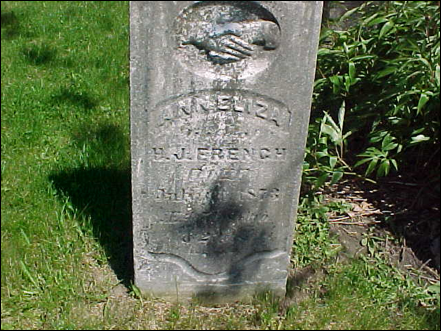

French Family Association
The Official Website of the Surname French
St. Mary’s Church, Oakfield, Fond du Lac Co., Wisconsin, 1857
Chart #156, Eli French, 1800
Dummerston, Windham Co., VT
Oakfield, Fond du Lac Co., WI
http://www.frenchfamilyassoc.com/FFA/CHARTS/Chart156/
Now Connected to FFA Chart #2
This chart updated by Mara French on 12/12/11. Numbers in brackets [ ] show sources and refer to the bibliography at the end of this chart. An asterisk (*) shows continuation of that line. Send any corrections or additions to this chart to marafrench@mindspring.com. Revisions: 2009, 2011.
NOTE: Please make any corrections or additions to this chart – although this is not my family, I will be updating it from time to time. Refer to this chart by chart number Refer to each family member by their number. Additions are greatly appreciated. You will be notified of the next revision.
Contents
Home Page (see http://www.frenchfamilyassoc.com/FFA/)
Connected to FFA Chart #2
Foreword
I’ve researched this line just about all I can from ancestry.com and from the internet. Additions need to come from family members or from local books or historians who haven’t put their information online.
P.S. Although Eli French is not of my line, I will continue to do research on him as time permits. My line is FFA Chart #6.
History and Background
This chart has been connected to FFA Chart #2: (see
http://www.frenchfamilyassoc.com/FFA/CHARTSWEB/ChartE002.htm)
1. William French, b. 1605 in England
2. John French, b. 1635 in England
3. William French, b. 8 Aug 1687 in Billerica, m. Mehitable
Patten
4. Nathaniel French, b. 2 Feb 1721 in Billerica, Middlesex Co., MA, m.
Elizabeth Frost
5. Nathaniel French, b. 13 Jan 1747 in Charlton, Worcester Co., MA, m. Betsey
Nurse
6. Samuel French, b. 13 Mar 1777 in Dummerston,
Windham Co., VT, d. 20 Jun 1843 in VT, m. Sarah (Sally) Gates who was b. 5 Jan
1779 and d. 1 Sep 1844
7. Eli French, see below.
First Generation
Children of Samuel and Sally (Gates) French
Of these 9 children, only 2 had descendants with the surname French.
In the 1820 census of Dummerston,
Windham Co., VT, Samuel is listed with his family:
2 males under 10 = George and Martin
1 male 10-15 = Milton
2 males 16-25 = Oren and Eli
1 male 26-44 = Samuel
1 female 10-15 = Emily
1 female 16-25 = Betsy
1 female 26-44 = Sally
1.1* Eli French, b. 8 Sep 1800 in VT, m. Mahala Jennings, she was b. ca. 1805 (confirmed by census) in NY, was dau. of Stephen Jennings, born in Delaware Co., NY. After Eli died, Mahala m2. Morey, m3. Easton, m4. Noble, and d. 1882 in Broome Co., NY. Eli died shortly after his son Harmon French was born in 1820.
1.2 Oran/Oren/Orrin French, b. 24 Mar 1802 in VT [2]. By the 1850 census, Orrin was living in Ashford, Cattaraugus, NY, married to Eliza, with two daughters: Betsey 16, and Sarah 13. By the 1860 census of Ashford, Oran was 58, his wife had died, and he was living with his daughter Sarah.
1.3 Betsy French, b. 15 Mar 1804 in VT, d. 29 Jul 1839 at noon, age 35 [2].
1.4 Milton French, b. 8 Jul 1806 in VT, d. 6 Sep 1817 at 5:15 p.m., age 11 [2].
1.5 Emily French, b. 15 May 1809 in VT, d. 13 Oct 1851, m. Stephen P. Burnett [2].
1.6 Martin French, b. 1 Apr 1813 in VT, d. 26 Apr 1814 at 10:00 p.m., age 1 [2].
1.7 George Washington French, b. 21 Feb 1817 in VT, d. 16 Sep 1843 at 5 a.m., age 26 [2].
1.8* Samuel French, Jr., b. 12 Mar 1819 in VT [2]. He is listed in the 1850 census in Dummerston, Windham Co., VT, living with his wife Lucinda who was b. 1822 and their children Juliaett French and Charles J. French. Apparently Samuel died before the 1860 census as his wife Lucinda is living in Dummerston, Windham Co., VT with their children Julia A. French, Charles French, and Ira G. French. Lucinda is living with her widowed daughter Juliett Ormsbee in the 1880 census of Dummerston, Windham Co., VT, age 57.
1.9 Ira Gates French, b. 30 Oct 1822 in VT [2]. Ira is listed in the 1870 census of Canaan, Columbia Co., NY living with his wife, Louisa and four others: Wm. H. Palmer, William Low, E. Leavenworth, Lucinda Leavenworth, Mary F. Leavenworth. Ira is listed in the 1880 census of Canaan, Columbia, NY, married to Louisa, and stating that both his parents were born in VT and he was a farmer. He m. Louisa who was b. ca. 1836 in NY. Ira is listed in the 1900 census of Brattleboro, Windham Co., VT, age 77, the uncle of George W. Burnett and his wife Alice B. Burnett and Ira F. Burnett, descendants of Ira’s sister Emily.
Second Generation
Children of Eli and Mahala (Jennings) French, 1.1
2.1* Harmon French, b. 4 May 1819 in NY, m1. ca. 1852 to Ann Eliza Stoddard, d. 1 Mar 1885 at 65 years, 9 months, 25 days, and is buried at the Oak Center Cemetery in Fond du Lac Co., WI. Resident of Fond du Lac Co, WI between 1850-1870. He is listed in the 1870 census of Oakfield, Fond du Lac, WI, age 51, b. ca. 1819 in NY, living with his wife Ann Eliza, and their children George (12), Elina (7), William (6), and Edward (2). In the 1900 census of Oakfield, Fond du Lac Co., WI, his son Edward states that both his parents were born in MA. Ann Eliza was b. 11 Jun 1826 and d. 31 Jul 1873 at age 47 y, 1 m, 20 days, the wife of H. J., and buried at the Oak Center Cemetery in Fond du Lac Co., WI, the same cemetery as their daughter Ann Eliza. Thereafter, Harmon m2. Maria C. who later was buried at the Oak Center Cemetery in Fond du Lac Co., WI, the wife of H. J.

Children of Samuel and Lucinda French, 1.8
2.3 Julia/Juliett A. French, b. 1844 in VT, is listed in the 1850 and 1860 census of Dummerston, Windham Co., VT, living with her parents. By the 1870 census of Dummerston, Juliette had m1. George Dunobees and had son Daniel G. Dunobees, aged 1, and was living also with her mother Lucinda. Before the 1880 census of Dummerston, Windham, VT, Juliett had m2. Ormsbee and had at least 4 children, and he had died as she is listed as widowed. Son Daniel G. Dunobees changed his name to Daniel B. Ornsbee, and his siblings were Lilla J. Ormsbee, Elizabeth L. Ormsbee, and Georgia L. Ormsbee. Juliett’s father had also died, and her mother Lucinda was living with the family, aged 57.
2.4 Charles J. French, b. 1848 in VT, is listed in the 1850 census and 1860 census of Dummerston, Windham Co., VT, living with his parents. By the 1910 census and 1920 census, Charles was married to Nettie and living in Ogdensburg, Saint Lawrence Co., NY. He d. in 1922 and is buried at the Ogdensburg Cemetery in Ogdensburg, St. Lawrence Co., NY. No heirs.
2.5 Ira Gates French, b. Dec 1854 in VT, is listed in the 1860 census of Dummerston, Windham Co., VT, living with his parents. By the 1880 census of Dummerston, he was working on a farm and living with the Roel family and with his mother Lucinda who was then 53. In the 1900 census, Ira was living in Orange, Franklin Co., MA, single, age 45; likewise in the 1910 census when he was 55, and in the 1920 census when he was 65. No heirs.
Third Generation
Children of Harmon and Ann Eliza (Stoddard) French, 2.1
3.1 Harmon H. French, b. 28 or 29 Apr 1856 in WI, d. 29 Dec 1864 at age 8 years, 8 months, the son of H. J. and A. E., and is buried at the Oak Center Cemetery in Fond du Lac Co., WI.
3.2 George H. French, b. 1858 in WI, d. 5 Oct 1924. Mrs. George H. French (Elizabeth) was living in Iowa in Aug 1890. George appears in the 1870 census of Oakfield, Fond du Lac, WI, living with his parents. Elizabeth was b. in 1865, d. 1942, and is buried at the Abova Cemetery in Oakfield, Fond du Lac Co., WI, as the wife of George. George is also buried at the same cemetery, but he is registered as dying in 1920, not 1924.
3.3 Ann Eliza C. French, b. 20 Apr 1862, d. 7 Apr 1871 at 8 years, 11 months, 18 days, the dau. of H. J. and A. E., and is buried at the Oak Center Cemetery in Fond du Lac Co., WI. She appears in the 1870 census of Oakfield, Fond du Lac, WI, living with her parents, and her name is listed as Elina.
3.4* William (Willie) H. French, b. 1864 in WI, died young. He appears in the 1870 census of Oakfield, Fond du Lac, WI, living with his parents. He m. Maud J. Tew who was b. in 1868 and d. 1 Feb 1923 and is buried at the Avoca Cemetery in Oakfield, Fond du Lac Co., WI, as the wife of Wm. William d. in 1948 and is buried at the Avoca Cemetery in Oakfield, Fond du Lac Co., WI.
3.5* Edward H. French, b. 2 Jul 1867 in WI. He appears in the 1870 census of Oakfield, Fond du Lac, WI, living with his parents. He m. Jennie E. Loomis in 1892 and had son Merton E. French b. 30 Jun 1896. In the 1900 census of Oakfield, Fond du Lac Co., WI, he states that both his parents were born in MA. Jennie E. was b. in 1871 and d. in 1958, and is buried at the Lamartine Cemetery in Fond du Lac Co., WI. After he and Jennie divorced, Edward moved to Los Angeles, CA. Edward d. 6 Sep 1949 and his remains were brought back to Fond du Lac.
Fourth Generation
Children of William H. and Maud J. (Tew) French, 3.4
4.1 Harmon French, b. ca. 1886 and d. 18 Dec 1886, buried at the Rock River Cemetery in Oakfield, Fond du Lac Co., WI, as the son of William & Maud Tew French.
Children of Edward H. and Jennie E. French, 3.5
4.2* Merton E. French, b. 30 May or Jun 1896 in Fond du Lac, WI. He is listed in the 1900 census of Oakfield, Fond du Lac Co., WI, living with his parents. By the time he was 6 years old, his parents had divorced and he was living with his mother Jennie who had m2. Walis Baker in the 1910 census of Fond du Lac. Merton m. Mary Anna Klinzing by the 1920 census of Fond du Lac, WI, and had 2 children, Dovilien French and Donald French, and living with his grandmother-in-law, Louisa Loomis, age 73. By the 1930 census of Sheboygan, Sheboygan Co., WI, Merton was living with Marie and his 5 children. Merton d. Jul 1982.
Fifth Generation
Children of Merton E. and Mary Anna (Klinzing) French, 4.2
5.2 Darlene (or Dovilien) E. French, b. 10 Nov 1916, and living with her parents in the 1930 census of Fond du Lac, WI. She shows up in the 1920 census as living with her parents in Fond du Lac. She m. Laue, and she d. 8 Apr 2010, age 93.
DARLENE E. LAUE
November 10, 1916 - April 08, 2010
Darlene E. Laue, 93, a resident of the Woodlands Senior
Park, died Thursday, April 8, 2010, at St. Agnes Hospital. She was born on
November 10, 1916 in Fond du Lac, the daughter of Merton E. and Mary Anna Klinzing French. During her life, she lived and worked in
Waukesha and Portage, WI, and then returned to Fond du Lac in 2001. Surviving
are her sons, Robert (Bob) Laue of Waukesha, James (Margaret) Laue of Oxford,
and Tom (Susan) Laue of Seminole, Fl, 10 grandchildren, 16 great-grandchildren,
a sister, Marilyn (Donald) Johnson of Fond du Lac, a brother, John (Mick)
French of Dunedin, FL, nieces, nephews, and other relatives and friends. Her
parents, a sister, Beatrice French, two brothers, Robert and Donald French, two
sisters-in-law, Phyllis and Sandra French, two daughters-in-law, Arlowyn Laue and Mary Lou Laue, and two granddaughters, Reane and Renell Laue, preceded
her in death.
FUNERAL
INFORMATION
Visitation for Mrs. Darlene E. Laue will be on Tuesday,
April 13, 2010, from 9:30 to 11 am at Sacred Heart Church, 232 Peters Avenue, Fond du Lac. Mass of Christian Burial will be at 11 am on
Tuesday at the church. Rev. Luke Strand will officiate and entombment will be
in the Chapel of The Risen Christ Mausoleum, Calvary Cemetery. Uecker-Witt Funeral Home is in charge of arrangements. A
memorial has been established in Darlene’s name. Additional information and
guest book may be found at www.ueckerwitt.com
The family wishes to thank Sue Hendrickson and the wonderful staff at Woodlands Senior Park for their excellent care and compassion. Your care of Darlene went above and beyond expectations.
5.3 Donald E. French, b. 22 May 1918, and living with her parents in the 1930 census of Fond du Lac, WI. In the 1920 census of Fond du Lac, Donald was only 1 year old and living with his parents. He m. Phyllis M. Felchlin on 6 Dec 1940. She was b. 24 Jan 1921 and d. 3 Jul 2001 in Malone, Fond du Lac Co., WI. Donald died before his sister Darlene on 24 Dec 1999 in Malone, Fond du Lac, WI. Donald had children Michael, Julie, and Charlie. Michael was b. ca. 1940 and lives at 70 E. Johnson St., Fond Du Lac, WI, 54935-3404, 920-924-9328.
5.4 Marilyn I. French, b. 1922, and living with her parents in the 1930 census of Fond du Lac, WI. Still living in 2010. She m. Johnson and lives in Fond du Lac. She may live at 622 Western Ave., Fond du Lac, WI, 54935, tel: 920-921-0555. She and her brother John are the last 2 family members living in this generation.
5.5 Beatrice M. French, b. 19 Dec 1925, and living with her parents in the 1930 census of Fond du Lac, WI. She d. 18 Jun 1932, age 6, and is buried at the Saint Cloud Cemetery, Saint Cloud, Fond du Lac Co., WI. She was killed in a car accident.

5.6 Robert George French, b. 3 Feb 1928, and living with her parents in the 1930 census of Fond du Lac, WI. He d. 3 Mar 1983. Robert m. Marilyn Rose Whitmore on 26 Nov 1949 in Fond du Lac. Robert died before his sister Darlene.
5.7 John Mick French, b. Mar 1939, lives at 1035 Forest Ct., Dunedin, Pinellas Co., Florida, in 2010. His wife and daughter died before 2011.
DNA Testing
Administered by Julia French Wood. For any questions regarding DNA, please email Julia at juliaFWood@aol.com.
A good source for research would be for a male with the
surname French of this line to take the DNA test. It is a simple test that
doesn’t involve blood. A kit is delivered to your house with special brushes
for you to take cheek swabs and the tip is injected into the tiny test tubes to
be returned to the lab. After the tests that you ordered are completed, in
about 4 weeks, you will be notified and can log in to your personal page at the
company to view your results and your DNA matches. They may match up with one of
the tests shown here: http://www.familytreedna.com/public/french/default.aspx?section=yresults.
The FamilyTree DNA website gives a special lower
price to those with the surname French. Read about those who approve of it: http://www.familytreedna.com/testimonials.aspx.
To get the discounted price for our French DNA Project group, go to http://small-stuff.com/FRENCH/DNA/ and click at
the left on "Join the French DNA Project" then place your
order. Julia French Wood suggests the 37 marker
test (Y-DNA37), but if you want to start with 25, you can upgrade to a higher
test at a later date if needed.
Bibliography
[1] Fond du Lac, Wisconsin Vital Statistic Index website: http://sql.winnefox.org/fonddulac/vital/results.asp?LastName=&FirstName=&DateType=Any&b4month=&b4date=&b4year=&aftmonth=&aftdate=&aftyear=&betmonth1=&betdate1=&betyear1=&betmonth2=&betdate2=&betyear2=&userSort=LN&RecordType=&page=835, start on 835-836.
[2] Jef & Francine Potters, email: jeffran@ptd.net (good in 2011).
Hello Mara,
I have in my office an old Bible with a history of people named French. I have been searching for someone to write to, found your site and here I am.
The Bible lists:
Samuel French Born March 13, 1777 Died June 20, 1843
Sally French Born January 5, 1779 Died September 1, 1844
Eli French Born September 8, 1800 Died July 21, 1868
Oran French Born March 24, 1802 Died
Betsy French Born March 15, 1804 Died July 29, 1839@ 12 noon
Milton French Born July 8, 1806 Died September 6, 1817@5:15pm
Emily French Born May 15, 1809 Died October 13, 1851, married Stephen P. Burnett
Martin French Born April 1, 1813 Died April 26, 1814@10:00 pm
George Washington French Born February 21, 1817 Died September 16, 1843@5 am
Samuel French Jr. Born March 12, 1819 Died
Ira Gates French Born October 30, 1822 Died
There is also a clipping in the Bible of the poem/verse: “The Morning of the Heart”.
I hope this is helpful to you. I saw on your site on chart 156 where this information might give you a new lead.
I emailed you because I love researching my own family/genealogy. I hope you receive this and it is not a broken link.
Sincerely, Francine Potters from the Lehigh Valley (Slatington), Pennsylvania area.
[3] Delaware County, NY, Genealogy and History Website: http://www.dcnyhistory.org/index2.html.
[4] Find A Grave, http://www.findagrave.com. They only French not listed above from this website in Fond u Lac County is Naomi A. French, b. 1 Feb 1790, d. 8 Jan 1871, wife of Samuel, who was buried at the Fairwater Cemeter in Fairwater, Fond du Lac Co., WI.
[5] US Gen Web Archives Project, Wisconsin, Fond du Lac County, Oakfield Township, Oak Center Cemetery, Tombstone Photos, website: http://www.usgwarchives.org/wi/cemetery/fonddulac-oakfieldtwp-oakcenter.html.